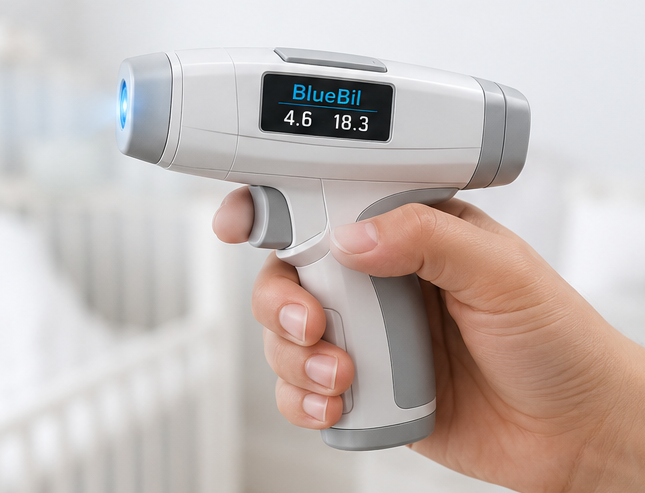

Non-invasive bilirubin insight
Designed for earlier newborn jaundice screening.
A handheld optical screening concept built around intuitive positioning, fast measurement feedback, and clear bilirubin guidance.

OLED guidance
Optical sensor
Measurement trigger
Ergonomic grip

Scale & ergonomics
Built to feel familiar in clinical workflows.
The handle-forward form factor helps communicate that BlueBil is meant to be approachable, portable, and easy to position during newborn care.